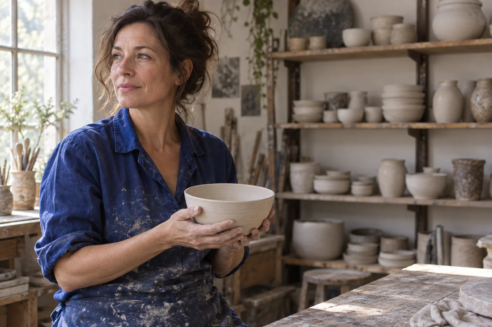

Clay hours
The pause between shaping a vessel and deciding that it is finished.
Clay hours is an original imagined portrait session centered on the relationship between a person and a working object. The unfinished bowl gives the hands something natural to do. The workshop remains visible, but its shelves are softened so they offer context without competing with the face.
A portrait can begin with what someone is holding.
The blue work shirt carries the strongest color. Against warm clay and pale walls, it creates a calm center of gravity. The frame leaves room to one side so the subject does not feel enclosed by the image. This space is not intended for advertising copy; it allows the workshop to remain part of the portrait.
The scene and person were generated for this fictional portfolio. No real artist was photographed or interviewed. The writing explains editorial choices in the constructed image, not a documentary encounter. In a real commission, consent, accurate context, and the subject’s own account would shape the process.
Editorial considerations
In a real portrait assignment, begin with informed participation and the subject’s own account. Agree how images may be used, clarify the setting, and give the person room to decline or revise the approach. This fictional study has no real subject or publication agreement.
Next story → Between counts